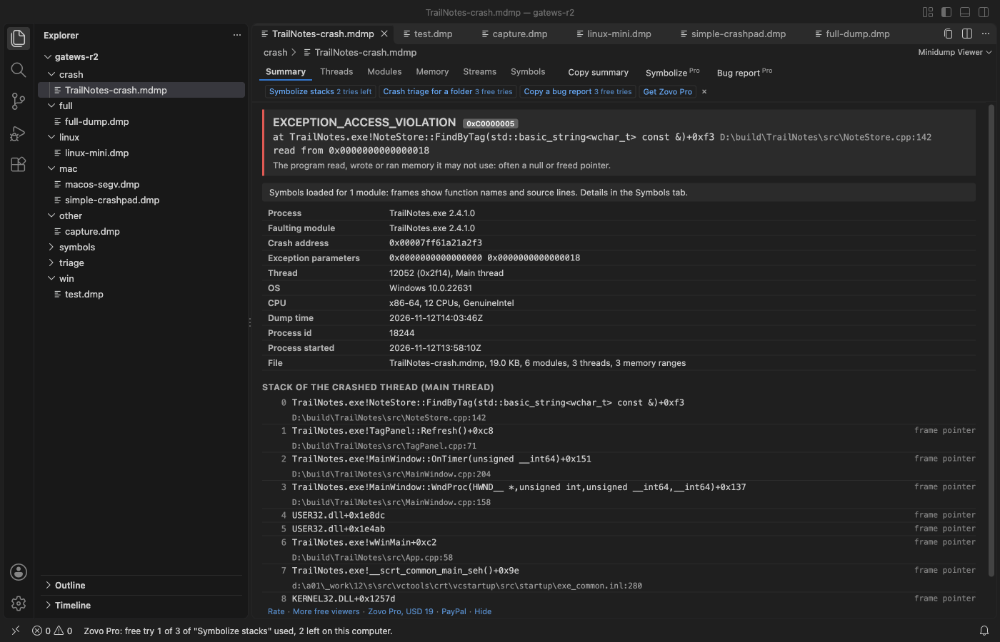

Open files in VS Code and Cursor / Binary, network and hardware
Open a minidump crash dump (.dmp, .mdmp) in VS Code
Minidump Viewer & Crash Dump opens a .mdmp or .dmp crash dump in a VS Code tab and shows why the program crashed: the exception in plain words, the faulting module and offset, and the stack of the crashed thread, with every thread, module and memory range next to it. It reads dumps from Windows (MiniDumpWriteDump, WER, procdump) and from Breakpad and Crashpad on Windows, Linux, Android and macOS, in plain JavaScript inside VS Code, with no debugger, no tools to download and nothing uploaded. All of that is free. Zovo Pro (USD 19 once) adds stack symbolization from your own PDB or Breakpad .sym files, crash triage for a folder of dumps, and a bug report in Markdown, with 3 free tries each.
Free, MIT license. Extension ID zovo.zovo-minidump-viewer, version 0.1.2. Needs VS Code 1.75.0 or newer.

Steps in VS Code
- Install Minidump Viewer & Crash Dump from the Marketplace, or press Ctrl+P (Cmd+P on macOS) and run
ext install zovo.zovo-minidump-viewer. - Click a
.mdmpfile in the Explorer. It opens in the viewer. - For a
.dmpfile, right-click it and choose Open in Minidump Viewer, or use Open With. Other tools use.dmptoo, so the viewer is an option there. A.dmpthat opens as text and starts with the MDMP signature switches to the viewer once. - Read the Summary: the exception (for example an access violation with the read or write address, a stack overflow or a POSIX signal), the faulting module and offset, the crashed thread, the OS, the CPU and the dump time.
- Below it is the stack of the crashed thread, each frame as module+offset. The Threads, Modules, Memory and Streams tabs show the rest of the dump.
- Click Copy summary to put the crash in a few lines of text on the clipboard. To try it first, run "Minidump: Open the Sample Crash Dump" from the Command Palette.
Where Zovo Pro saves time
The summary, the crashed thread's stack, every thread with its registers and raw stack memory, the module list with versions and debug ids, memory ranges, streams and Copy summary are free, with no network requests and no telemetry. There is no trial timer and no license banner.
Without symbols a frame reads like TrailNotes.exe+0x1a2f3. Symbolize Stacks names every frame with its function, source file and line from your own .pdb files or Breakpad .sym files in local folders. A symbol file is used only when its debug id matches the module, so a PDB from another build never gives wrong names, and no symbol server is contacted. The other two Pro tools are Crash Triage for a Folder, which groups every dump in a folder by exception and faulting module and offset (or function) with counts and app versions, saved as CSV or Markdown, and Copy a Bug Report, which puts the exception, the faulting module and version, the top frames and the OS in Markdown on the clipboard.
With Symbolize Stacks (Zovo Pro)
- Put your
.pdbor.symfiles in a folder and add it to the settingminidumpViewer.symbolPaths. The dump's own folder is always searched. - Click Symbolize in the viewer toolbar, or run "Symbolize Stacks with Local PDB or .sym Files (Pro)" from the Command Palette.
- Read the stack with function names and source lines. A try counts only when the tool showed its result, so a search that finds no symbols does not use one.
Symbolize Stacks works 3 times on your computer before it asks for a license, and a try counts only when you get a result. Opening a file shows no popup and no countdown.
Zovo Pro costs USD 19 once. It is not a subscription, and it turns on the Pro tools in every Zovo extension, not only Minidump Viewer & Crash Dump. After a card payment (Stripe) your license key shows on the next page. In VS Code, run "Zovo Pro: Enter Zovo Pro license key" from the Command Palette and paste it. The key is checked on your computer, with no network call. With GitHub Sponsors, pick the "$19 one time" tier, then run "Zovo Pro: I already paid: unlock with GitHub Sponsors" and sign in with the same GitHub account. With PayPal, send USD 19 with "Zovo Pro" in the note and the key comes by email within a day.
A team of 5: USD 59 once, by card or by PayPal. Every rule and every Pro tool is on the Zovo Pro page.
Steps in Cursor, Windsurf or VSCodium
- Open the Extensions view with Ctrl+Shift+X (Cmd+Shift+X on macOS).
- Search for
zovo.zovo-minidump-viewerand click Install. Cursor, Windsurf and VSCodium install from Open VSX, where it is published aszovo/zovo-minidump-viewer. - If your editor has no gallery, download the .vsix from the Open VSX page and run "Extensions: Install from VSIX...".
- Then use it the same way as in VS Code.
What Minidump Viewer & Crash Dump handles
- Dumps from Windows (MiniDumpWriteDump, WER, procdump) and from Breakpad and Crashpad on Windows, Linux, Android and macOS.
- x86, x64, ARM and ARM64 thread contexts.
- Thread names, unloaded modules, Linux
/procstreams, Breakpad assertion text and Crashpad annotations. - Large full dumps: a local file is read only where the viewer looks. Damaged or cut-off dumps still show every part that can be read.
What it does not do
- The stack is walked with the frame-pointer chain and a stack scan. Unwind tables are not used, so code built without frame pointers gives a short chain, and the scan shows likely return addresses, not a checked call chain.
- Names from PDB public symbols stay in their decorated C++ form.
- Inline frames from Breakpad INLINE records are not shown.
- Kernel memory dumps and
.dmppacket captures are not minidumps; the viewer says so.
Other options
- Minidump Parser (
CuiLiAn.minidump-parser, 7,569 installs, not on Open VSX). Its own description: "Powerful crash dump analyzer for native applications. Analyze minidump files (.dmp), extract symbols, enhance stack traces, and analyze crashes with register tooltips and multilingual support." - WinDBG for VS Code (
tmidorikawa.windbg-vscode, 120 installs, not on Open VSX). Its own description: "Read-only Windows crash dump analysis and experimental TTD trace, memory and PE/PDB inspection." - WinDbg. Microsoft's debugger for Windows opens minidumps with full unwind info and symbol servers. It runs only on Windows, outside VS Code.
Install counts and Open VSX status were checked on 12 November 2026. Descriptions in quotes are the extensions' own.
Questions
Can VS Code open a .dmp file without an extension?
No. VS Code shows a minidump as binary. A debugger set up with the matching program files can load a dump, but to read the crash at a glance you need a viewer extension.
Do I need the PDB files to see the crash?
No. The exception, the faulting module and offset, the threads and the modules show without any symbols. Function names and source lines need your PDB or .sym files and the Pro symbol tool.
Is my crash dump uploaded anywhere?
No. The dump is read on your computer, and the extension makes no network requests.
Does it work in Cursor or Windsurf?
Yes. Cursor, Windsurf and VSCodium install extensions from Open VSX. Search for the extension in their Extensions view and install it there.
More about Minidump Viewer & Crash Dump
Read the Minidump Viewer & Crash Dump page for every feature and setting, or the source code on GitHub.
Related guides
- Use a hex editor in VS Code
- Open a binary file in VS Code
- Open a PCAP file in VS Code
- View VCD waveforms in VS Code
Zovo Pro and support
Zovo Pro: USD 19 once, every Zovo viewer. It turns on the Pro tools in this extension and in the other Zovo extensions you use. The free features stay free.
After a card payment your license key shows on the next page. Paste it with the command "Zovo Pro: Enter a key".
You can also support the work with no Pro:
Need your format supported?
Open a format request with a sample file, and I reply there whether it can be done. For USD 299 once, through this GitHub Sponsors tier, I add your file format or a missing feature to this extension, with tests, within 7 days.